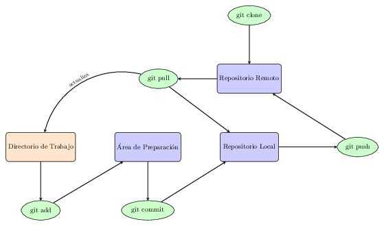

Volver al índice
📌 Nota Importante
Este curso utiliza Overleaf (herramienta cloud). Todo lo que necesitas está en el navegador web.
Si prefieres trabajar con herramientas locales (TeXstudio, Git desde terminal, JabRef), consulta la versión anterior del curso en: https://105.ugr.es/latex
Ambas versiones enseñan los mismos conceptos de LaTeX y Git. La única diferencia es dónde ejecutas las herramientas (cloud vs. local).
Introducción a Git
¿Qué es Git y por qué es útil para el control de versiones?
Git es un sistema de control de versiones distribuido, creado por Linus Torvalds en 2005. Es una herramienta
esencial para la colaboración académica y científica, que permite rastrear cambios en documentos, colaborar eficientemente y gestionar diferentes versiones de un proyecto.
Git destaca por varias razones:
- Historial completo: Git mantiene un registro detallado de todos los cambios realizados en
un proyecto, permitiendo ver quién hizo qué cambios y cuándo.
- Trabajo distribuido: Cada colaborador tiene una copia completa del repositorio, lo que
facilita el trabajo sin conexión y mejora la redundancia.
- Branching y merging: Git permite crear ramas para trabajar en diferentes características o
versiones del proyecto de forma aislada, y luego fusionarlas fácilmente.
- Velocidad y eficiencia: Git es notablemente rápido en comparación con otros sistemas de
control de versiones.
- Flexibilidad de flujo de trabajo: Git se adapta a diversos estilos de desarrollo y tamaños
de equipo.
- Integración con GitHub y Overleaf: Git se integra perfectamente con GitHub para respaldos en la nube y con Overleaf para sincronización automática.
Conceptos Fundamentales de Git
Para entender cómo funciona Git, es importante conocer estos conceptos clave:
📁 Repositorio
Un repositorio es una carpeta que contiene todos tus archivos y su historial de cambios. En Git, cada repositorio es independiente y completo.
📝 Commit
Un commit es una "captura de pantalla" de tu proyecto en un momento específico. Cada commit guarda:
- Los cambios realizados en los archivos
- Quién hizo los cambios (autor)
- Cuándo se realizaron (fecha/hora)
- Un mensaje descriptivo explicando qué se cambió
Ejemplo: "Agregué introducción a la Clase 1" o "Corregí ecuación en la sección 2"
🌿 Branch (Rama)
Una rama es una línea de desarrollo independiente. Por ejemplo:
- main: La versión oficial y estable
- experimental: Rama para probar ideas nuevas
- feature/capitulo-3: Rama para trabajar en el capítulo 3
Las ramas permiten trabajar en paralelo sin afectar la versión principal.
☁️ Repositorio Remoto (GitHub)
Un repositorio remoto es una copia de tu proyecto alojada en un servidor (como GitHub). Es tu respaldo en la nube y permite colaboración con otros.
🔄 Pull y Push
- Push: Subir cambios locales al repositorio remoto (GitHub)
- Pull: Descargar cambios del repositorio remoto a tu proyecto local
Diagrama de Flujo de Trabajo de Git
Aquí se muestra el ciclo de vida típico de un cambio en Git:

En Overleaf + GitHub, este proceso es automático: No necesitas ejecutar comandos. Overleaf sincroniza automáticamente tus cambios con GitHub.
Crear una cuenta en GitHub
- Visita https://github.com/
- Haz clic en "Sign up" en la esquina superior derecha
- Ingresa tu correo electrónico (Institucional), crea una contraseña y elige un nombre de
usuario
- Completa el proceso de verificación
- Selecciona el plan gratuito
Configurar el perfil (opcional)
- Accede a tu cuenta
- Ve a "Settings" > "Profile"
- Añade una foto de perfil y una breve biografía
- Completa información adicional como tu ubicación y sitio web
Crear tu primer repositorio
- En GitHub, haz clic en el botón "+" en la esquina superior derecha
- Selecciona "New repository"
- Nombra tu repositorio empezando por 2025Apellido
- Añade tus apellidos y nombre en la descripción
- Elige que el sea repositorio privado
- Marca "Initialize this repository with a README"
- Haz clic en "Create repository"
Añadir al profesor como colaborador (evaluación)
- En tu repositorio, ve a Settings (pestaña superior derecha).
- En el menú izquierdo, selecciona Collaborators > Add people.
- Escribe el nombre de usuario de GitHub del curso (latex-git).
- Haz clic en Add to this repository.
- Recibirá una notificación en GitHub y una invitación por correo y deberá aceptarla.
Git integrado en Overleaf (Usando la Licencia de Campus)
En Overleaf, Git está completamente integrado. No necesitas instalar Git en tu ordenador ni usar la terminal. Todo se hace desde la interfaz de Overleaf.
Activar la sincronización con GitHub en Overleaf
- En tu proyecto Overleaf, haz clic en "Menu" (arriba a la izquierda).
- Busca la opción "Git" en el menú.
- Se abrirá un panel mostrando la URL para clonar desde GitHub:
git clone https://git.overleaf.com/[project-id]
- Si tu repositorio GitHub está conectado, verás la opción "Link to GitHub".
- Sigue los pasos para autorizar a Overleaf a acceder a tu GitHub.
Sincronización automática Overleaf-GitHub
Una vez vinculado tu proyecto Overleaf con un repositorio de GitHub:
- ✅ Cambios en Overleaf se sincronizan automáticamente a GitHub.
- ✅ Cambios en GitHub se pueden traer a Overleaf (pull).
- ✅ Historial completo está disponible en GitHub.
- ✅ Control de versiones sin necesidad de usar la terminal.
Clonar un proyecto desde GitHub a Overleaf
- En Overleaf, ve a "New Project".
- Selecciona "Import from GitHub".
- Autoriza a Overleaf si es la primera vez.
- Selecciona el repositorio que deseas clonar.
- ¡Listo! Tu proyecto ahora está en Overleaf con sincronización automática.
Ver cambios y commits en Overleaf
En Overleaf puedes ver el historial de cambios de dos formas:
- Historial de Overleaf: Haz clic en "History" en la barra superior. Ves todos los cambios realizados en Overleaf con timestamp y colaborador.
- Historial de Git/GitHub: Haz clic en "Menu" > "Git". Ves los commits de tu repositorio GitHub.
Alternativas a GitHub
Aunque GitHub es la plataforma más popular para alojar repositorios Git, existen alternativas notables:
- GitLab: Ofrece repositorios privados ilimitados en su plan gratuito y puede instalarse en servidores propios. Destaca por su sistema integrado de CI/CD.
- Bitbucket: Desarrollado por Atlassian, se integra bien con Jira y otras herramientas de la suite. Ideal para equipos pequeños que necesitan repositorios privados.
Introducción a LaTeX
¿Qué es LaTeX y por qué es útil para la escritura académica?
LaTeX es un sistema de composición de textos de alta calidad, especialmente diseñado para la producción de documentos técnicos y científicos. Creado por Leslie Lamport en 1984, LaTeX es una capa de macros construida sobre el motor de composición tipográfica TeX, desarrollado por Donald Knuth.
LaTeX es particularmente útil para la escritura académica por varias razones:
- Calidad tipográfica superior: LaTeX produce documentos con una apariencia profesional y consistente.
- Gestión de referencias y bibliografías: Facilita la creación y manejo de citas y bibliografías extensas.
- Escritura de fórmulas matemáticas: Ofrece un sistema robusto para la composición de ecuaciones complejas.
- Separación de contenido y formato: Permite a los autores centrarse en el contenido, dejando el formato al sistema.
- Control preciso sobre la estructura del documento: Ideal para documentos largos como tesis o libros.
- Estabilidad y portabilidad: Los documentos LaTeX son archivos de texto plano, fáciles de versionar y compartir.
Recursos adicionales
Para más información sobre LaTeX, puedes visitar los siguientes enlaces:
https://www.latex-project.org/
https://www.ctan.org/
http://cervantex.es/manuales
Crear tu Cuenta en Overleaf (Recomendado para este curso)
En lugar de instalar LaTeX localmente, usaremos Overleaf, una plataforma online colaborativa que te permite escribir documentos LaTeX sin necesidad de instalación.
¿Por qué Overleaf en lugar de instalar LaTeX localmente?
- ✅ Sin instalación complicada: Solo necesitas un navegador web y una conexión a internet.
- ✅ Compilación automática: Los documentos se compilan automáticamente en los servidores de Overleaf mientras escribes.
- ✅ Vista previa en tiempo real: Ve los cambios en el PDF mientras editas el código LaTeX.
- ✅ Colaboración integrada: Trabaja con otros estudiantes en el mismo documento simultáneamente.
- ✅ Plantillas profesionales: Acceso a más de 6,000 plantillas preconfiguradas.
- ✅ Compatible con cualquier dispositivo: Funciona en Windows, macOS, Linux, tablets y móviles.
- ✅ Integración con GitHub: Sincroniza automáticamente tu proyecto con GitHub (si tu universidad tiene licencia de campus).
Crear tu cuenta en Overleaf:
- Visita https://www.overleaf.com
- Haz clic en el botón "Sign up" en la esquina superior derecha.
- Elige uno de estos métodos:
- Opción 1 (Recomendado): Haz clic en "Sign up with Google" o "Sign up with GitHub" y autoriza con tu cuenta Google o GitHub.
- Opción 2: Introduce tu correo institucional, elige una contraseña segura y haz clic en "Create account".
- Verifica tu dirección de correo electrónico haciendo clic en el enlace que recibirás en tu bandeja de entrada.
- ¡Tu cuenta en Overleaf está lista! Ahora tendrás acceso al panel de proyectos.
Primer acceso a Overleaf:
Después de crear tu cuenta, verás el panel de proyectos de Overleaf. Desde aquí puedes:
- Crear un nuevo proyecto en blanco: Haz clic en "New Project" > "Blank Project".
- Usar una plantilla: Haz clic en "New Project" > "From Template" para elegir entre miles de plantillas profesionales.
- Cargar un proyecto existente: Si tienes archivos LaTeX locales, haz clic en "New Project" > "Upload Project".
Interfaz de Overleaf - Guía Visual
Cuando abras un proyecto en Overleaf, verás la siguiente estructura:
- Panel izquierdo (Project panel):
- Lista de todos los archivos del proyecto.
- Puedes crear nuevos archivos, carpetas y subir imágenes.
- Acceso rápido a archivo
main.tex (archivo principal).
- Panel central (Editor):
- Aquí escribes el código LaTeX.
- Incluye numeración de líneas, colores de sintaxis y auto-indentación.
- Busca y reemplaza con
Ctrl+H (o Cmd+H en Mac).
- Panel derecho (PDF Preview):
- Vista previa del documento compilado en tiempo real.
- Actualiza automáticamente conforme escribes.
- Puedes descargar el PDF final.
Botones principales:
- Compile (verde): Compila el documento y muestra el PDF. Se ejecuta automáticamente.
- Share: Comparte el proyecto con otros estudiantes mediante un enlace o email.
- History: Ver el historial de cambios (versiones anteriores del documento).
- Menu: Acceso a opciones avanzadas como descargar proyecto, sincronización con GitHub, etc.
Crear tu Primer Proyecto en Overleaf
Paso 1: Crear un proyecto en blanco
- En el panel de proyectos, haz clic en "New Project".
- Selecciona "Blank Project".
- Asigna un nombre al proyecto (ej: "MiPrimerDocumento").
- Haz clic en "Create".
Paso 2: Estructura básica de un documento
Overleaf crea automáticamente un archivo main.tex con esta estructura básica:
\documentclass{article}
\usepackage[utf8]{inputenc}
\title{Mi Primer Documento}
\author{Tu Nombre}
\date{\today}
\begin{document}
\maketitle
\section{Introducción}
Este es mi primer documento en LaTeX usando Overleaf.
\end{document}
Paso 3: Editar y compilar
- Modifica el contenido en el panel central (editor).
- Haz clic en el botón "Compile" (verde) o presiona
Ctrl+Enter.
- Ve el resultado en el panel derecho (PDF Preview).
- ¡Felicidades! Has compilado tu primer documento LaTeX en Overleaf.
Paso 4: Compartir tu proyecto
- Haz clic en el botón "Share" (arriba a la derecha).
- Elige una de estas opciones:
- Edit link: Los colaboradores pueden editar el documento.
- View only link: Los colaboradores solo pueden ver (lectura).
- Copia el enlace y comparte con tus compañeros o profesor.
Workflow de este Curso: Git + GitHub + Overleaf
¿Cómo trabajan juntas estas herramientas?
En este curso, aprenderás a usar tres herramientas complementarias:
- Git: Sistema de control de versiones (rastrear cambios en tus archivos).
- GitHub: Plataforma online para alojar repositorios Git (colaboración y respaldos).
- Overleaf: Editor online de LaTeX (escribir y compilar documentos).
Flujo de trabajo recomendado:
Overleaf + GitHub (Con licencia de campus)
- ✅ Escribes en el editor de Overleaf.
- ✅ Overleaf sincroniza automáticamente con tu repositorio GitHub.
- ✅ Tú y tus compañeros ven los cambios en tiempo real en Overleaf.
- ✅ El historial de cambios está respaldado en GitHub.
- ✅ Trabajar desde cualquier dispositivo con el mismo proyecto.
- ✅ Sin necesidad de instalar nada en tu ordenador.
Información importante sobre Overleaf
Buenas noticias: Si tu universidad tiene una licencia de Overleaf Campus (que es muy probable), tendrás acceso a todas las características premium de Overleaf de forma gratuita:
- ✅ Compilación rápida (240 segundos vs 20 segundos en versión gratuita).
- ✅ Acceso a integraciones con GitHub, Zotero y Mendeley.
- ✅ Hasta 10 colaboradores por proyecto (ilimitado en algunos casos).
- ✅ Historial completo de cambios.
- ✅ Soporte prioritario.
Para activar tu cuenta de campus, en Overleaf ve a Account Settings y busca la opción de Campus License.
Limitaciones de Overleaf (versión gratuita sin licencia)
Si no accedes a través de la licencia de campus, la versión gratuita de Overleaf tiene estas limitaciones:
- Tiempo de compilación: Máximo 20 segundos por compilación.
- Colaboradores: Solo 1 colaborador por proyecto (otros pueden ver con enlace compartido).
- Tamaño de material editable: Máximo 7 MB por proyecto.
- Tamaño de archivo individual: Máximo 2 MB por archivo.
- Sincronización con GitHub: No disponible en versión gratuita (sí con licencia campus).
Nota: Para este curso, estas limitaciones NO son un problema. Trabajaremos con documentos razonables en tamaño.
Integraciones útiles de Overleaf
1. Integración con Zotero (para bibliografía)
Zotero es un gestor de referencias que puede integrarse con Overleaf. Aprenderemos esto en la Clase 4.
2. Integración con Mendeley (alternativa)
Similar a Zotero, es otra opción popular en universidades. También se integra con Overleaf.
3. Sincronización con GitHub (Licencia Campus)
Si tu institución proporciona licencia Campus, puedes sincronizar tu proyecto Overleaf directamente con GitHub:
- Cambios en Overleaf se sincronizan automáticamente a GitHub.
- Los colaboradores ven los cambios en tiempo real.
- Historial de versiones respaldado en la nube.
Volver al índice
Ejercicios Prácticos - Clase 1
Realiza estos ejercicios en orden. Son esenciales para dominar Git, GitHub y Overleaf.
✏️ Ejercicio 1: Registrarse en GitHub (10 minutos)
- Ve a https://github.com.
- Haz clic en "Sign up" (esquina superior derecha).
- Completa el formulario con:
- Email: Tu correo institucional (recomendado)
- Contraseña: Segura y memorable
- Nombre de usuario: Formato sugerido: "2025TuApellido"
- Verifica tu email.
- Completa tu perfil con foto y biografía.
✏️ Ejercicio 2: Crear tu Primer Repositorio en GitHub (15 minutos)
- Haz login en tu cuenta de GitHub.
- Haz clic en el icono "+" (esquina superior derecha) > "New repository".
- Completa la información:
- Repository name: "2025TuApellido"
- Description: "Repositorio del curso de LaTeX y Git"
- Privado: Marca "Private"
- Inicializar: Marca "Add a README file"
- Haz clic en "Create repository".
- En tu repositorio, ve a Settings > Collaborators > Add people.
- Añade al profesor (nombre de usuario del curso) como colaborador.
✏️ Ejercicio 3: Registrarse en Overleaf (10 minutos)
- Ve a https://www.overleaf.com
- Haz clic en "Sign up" (esquina superior derecha).
- Crea tu cuenta con tu correo institucional (recomendado).
- Verifica tu email.
- Inicia sesión y accede al dashboard.
- IMPORTANTE: Si tu institución tiene licencia Campus:
- Ve a Account Settings > Campus License
- Ingresa el código de activación que te proporcionó la universidad
- Activa tu licencia Campus para desbloquear todas las funciones
✏️ Ejercicio 4: Crear tu Primer Proyecto en Overleaf (20 minutos)
- En Overleaf, haz clic en "New Project" (botón grande).
- Selecciona "Blank Project" para empezar desde cero.
- Asigna el nombre: "Mi_Primer_Documento"
- Se abrirá el editor. En el panel central, edita el archivo main.tex con este contenido:
\documentclass{article}
\usepackage[utf8]{inputenc}
\usepackage[spanish]{babel}
\title{Mi Primer Documento en Overleaf}
\author{Tu Nombre}
\date{\today}
\begin{document}
\maketitle
\section{¿Qué es Overleaf?}
Overleaf es una plataforma cloud para escribir documentos LaTeX sin necesidad
de instalación local. Es colaborativo y tiene compilación automática.
\section{Ventajas de Overleaf}
\begin{itemize}
\item Acceso desde cualquier navegador
\item Compilación automática en tiempo real
\item Colaboración simultánea con otros usuarios
\item Integración con GitHub
\item 6000+ plantillas profesionales
\end{itemize}
\end{document}
- Haz clic en el botón "Compile" (verde, arriba a la derecha).
- Observa cómo aparece el PDF compilado en el panel derecho automáticamente.
- ¡Congratulations! Has creado y compilado tu primer documento LaTeX en Overleaf.
✏️ Ejercicio 5: Colaborar en Tiempo Real - Compartir tu Proyecto (15 minutos)
- En tu proyecto "Mi_Primer_Documento", haz clic en el botón "Share" (arriba a la derecha).
- Verás dos opciones:
- "Edit as owner": Para dar acceso de edición a otros usuarios de Overleaf registrados.
- "Edit link": Copia el enlace para compartir con cualquiera.
- Copia el enlace "Edit link" y envíalo a un compañero (o a ti mismo desde otra ventana).
- Accede desde otra pestaña usando ese enlace.
- Ambos editores haced cambios simultáneamente y observa cómo se actualizan en tiempo real.
- Pide a tu compañero que agregue una nueva sección con su nombre (ej: \section{Contribución de Compañero}).
- Observa cómo el PDF se compila automáticamente con los cambios de ambos.
✏️ Ejercicio 6: Conectar tu Proyecto Overleaf con GitHub (20 minutos)
- Asegúrate de haber creado un repositorio en GitHub (Ejercicio 2).
- En Overleaf, abre tu proyecto "Mi_Primer_Documento".
- Haz clic en "Menu" (arriba a la izquierda).
- Busca y haz clic en "Sync with GitHub" (o "GitHub" dependiendo de tu versión).
- Se abrirá una ventana solicitando autorización. Haz clic en "Authorize with GitHub".
- Inicia sesión en GitHub si es necesario.
- Selecciona tu repositorio
2025TuApellido.
- Confirma la conexión. Ahora tu proyecto está sincronizado.
✏️ Ejercicio 7: Ver Cambios Sincronizados en GitHub (10 minutos)
- En Overleaf, haz un pequeño cambio en main.tex (ej: cambia el título).
- Overleaf compilará automáticamente (verás el PDF actualizado).
- Espera unos segundos para que sincronice con GitHub.
- Ve a tu repositorio en GitHub y actualiza la página.
- ¡Verás que main.tex ha sido modificado! El cambio se sincronizó automáticamente.
- Haz clic en el archivo main.tex en GitHub para ver el cambio resaltado.
✏️ Ejercicio 8: Historial de Cambios en Overleaf (10 minutos)
- En tu proyecto Overleaf, haz clic en "History" (arriba a la derecha).
- Verás una línea de tiempo con todos los cambios realizados.
- Cada cambio muestra:
- Quién lo hizo (autor)
- Cuándo se realizó
- Qué cambió (resaltado en colores)
- Haz clic en un cambio anterior para verlo.
- Haz clic en "Restore" si quieres volver a esa versión anterior.
Resumen de lo que aprendiste en esta clase:
- ✅ Entiendes qué es Git y por qué es importante.
- ✅ Creaste una cuenta en GitHub y un primer repositorio.
- ✅ Comprendes básicamente cómo funciona Git (add, commit, push).
- ✅ Creaste una cuenta en Overleaf.
- ✅ Compilaste tu primer documento LaTeX en Overleaf sin instalar nada.
- ✅ Compartiste un proyecto con compañeros en Overleaf.
- ✅ Sincronizaste un proyecto entre Overleaf y GitHub.
- ✅ Clonaste un repositorio desde GitHub.
Próxima clase: Clase 2 - Fundamentos de LaTeX
En la siguiente clase aprenderás:
- Estructura completa de un documento LaTeX.
- Comandos y entornos básicos.
- Crear documentos profesionales con secciones, subsecciones, etc.
- Todo esto usando Overleaf, sin instalaciones locales.
Más información